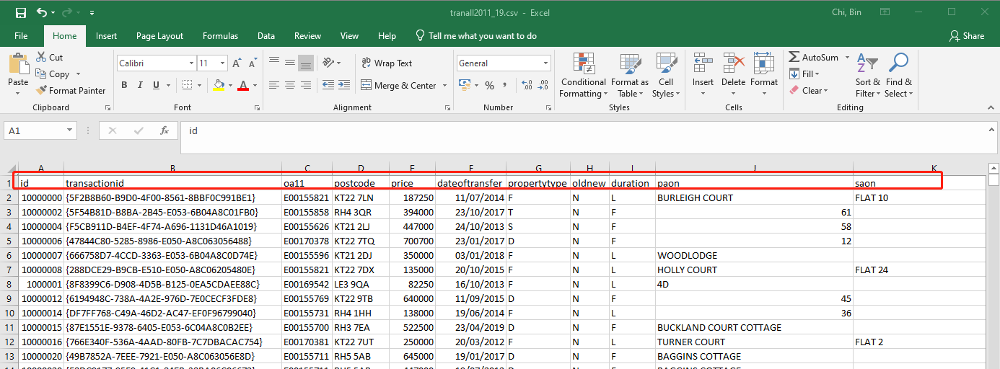

4 Working with big data in R
4.1 Read in CSV files
4.1.1 Read one large CSV file
- Read a CSV file with header 
library(data.table)
##It will take around 3 mins to read in 5,732,838 records with 105 variables
tran2<-fread("tranall2011_19.csv")- Read a CSV file without header
tran2<-fread("tranall2011_19.csv",header=F)- Read a CSV file with the second row as header and dropping the first row
epcdata1<-fread("D_EPC_data_2012_Q4_extract_0221.csv", skip = 1)
epcdata14<-read.csv("D_EPC_data_2020_Q4_extract_0221.csv", skip = 1)4.1.2 Fast reading multiple EPC csv files together in R
- Code for reading in EPCs in England and Wales
## assume all the unzipped EPC stored in EPC folder in D drive
x1 <- list.files(path = ".", pattern = NULL, all.files = FALSE,
full.names = FALSE, recursive = FALSE)
datalist <- paste("D:/EPC",x1,"certificates.csv",sep="/")
epcdata = data.table::rbindlist(lapply(datalist, data.table::fread, showProgress = FALSE))- Code for reading in EPCs in Scotland
datalist = list.files(pattern="*.csv")
epcdata = data.table::rbindlist(lapply(datalist, data.table::fread, skip=1,showProgress = FALSE))4.2 Basic larger dataset munging/wrangling
4.2.1 Select columns
class(tran2)## [1] "data.table" "data.frame"needlist<-c("transactionid","postcode","price","dateoftransfer","propertytype","laua","lad11nm","tfarea","priceper","TRANSACTION_TYPE")
tran2<-tran2[,..needlist]
head(tran2)## transactionid postcode price dateoftransfer propertytype laua lad11nm tfarea priceper
## 1: {5F2B8B60-B9D0-4F00-8561-8BBF0C991BE1} KT22 7LN 187250 2014-07-11 F E07000210 Mole Valley 46 4070.652
## 2: {5F54B81D-B8BA-2B45-E053-6B04A8C01FB0} RH4 3QR 394000 2017-10-23 T E07000210 Mole Valley 77 5116.883
## 3: {F5CB911D-B4EF-4F74-A696-1131D46A1019} KT21 2LJ 447000 2013-10-24 S E07000210 Mole Valley 139 3215.827
## 4: {47844C80-5285-8986-E050-A8C063056488} KT22 7TQ 700700 2017-01-23 D E07000210 Mole Valley 148 4734.459
## 5: {666758D7-4CCD-3363-E053-6B04A8C0D74E} KT21 2DJ 350000 2018-01-03 F E07000210 Mole Valley 63 5555.556
## 6: {288DCE29-B9CB-E510-E050-A8C06205480E} KT22 7DX 135000 2015-10-20 F E07000210 Mole Valley 44 3068.182
## TRANSACTION_TYPE
## 1: rental (private)
## 2: marketed sale
## 3: marketed sale
## 4: marketed sale
## 5: marketed sale
## 6: marketed sale4.2.2 Changing column names to lower case or upper case
4.2.2.1 Changing column names to lower case
setnames(tran2, tolower(names(tran2)))
head(tran2)## transactionid postcode price dateoftransfer propertytype laua lad11nm tfarea priceper
## 1: {5F2B8B60-B9D0-4F00-8561-8BBF0C991BE1} KT22 7LN 187250 2014-07-11 F E07000210 Mole Valley 46 4070.652
## 2: {5F54B81D-B8BA-2B45-E053-6B04A8C01FB0} RH4 3QR 394000 2017-10-23 T E07000210 Mole Valley 77 5116.883
## 3: {F5CB911D-B4EF-4F74-A696-1131D46A1019} KT21 2LJ 447000 2013-10-24 S E07000210 Mole Valley 139 3215.827
## 4: {47844C80-5285-8986-E050-A8C063056488} KT22 7TQ 700700 2017-01-23 D E07000210 Mole Valley 148 4734.459
## 5: {666758D7-4CCD-3363-E053-6B04A8C0D74E} KT21 2DJ 350000 2018-01-03 F E07000210 Mole Valley 63 5555.556
## 6: {288DCE29-B9CB-E510-E050-A8C06205480E} KT22 7DX 135000 2015-10-20 F E07000210 Mole Valley 44 3068.182
## transaction_type
## 1: rental (private)
## 2: marketed sale
## 3: marketed sale
## 4: marketed sale
## 5: marketed sale
## 6: marketed sale4.2.2.2 Changing column names to upper case
setnames(tran2, toupper(names(tran2)))4.2.3 Filter rows based on conditions
tran2[laua=="E09000007", ]## transactionid postcode price dateoftransfer propertytype laua lad11nm tfarea priceper
## 1: {CF95606A-595A-48F5-92CB-708D24CAFC58} NW3 7NL 1956000 2014-10-07 T E09000007 Camden 175.00 11177.143
## 2: {4EA5C667-79EF-4FF4-839D-5344F6F46842} NW2 2BT 3599000 2012-11-05 D E09000007 Camden 402.00 8952.736
## 3: {7EE393AB-3710-4D5D-AE60-7260ADFDEE54} NW3 7NL 1310000 2011-05-17 T E09000007 Camden 193.00 6787.565
## 4: {7E86B6FB-16FC-458C-E053-6B04A8C0C84C} NW3 7NL 2100000 2018-11-16 T E09000007 Camden 193.00 10880.829
## 5: {E33626A9-DCD2-4D65-AF98-33D8BC99D1FD} NW3 5PT 685000 2011-04-20 F E09000007 Camden 80.46 8513.547
## ---
## 13775: {13521672-6024-48B3-BACE-B2CCD6280078} NW8 7ED 5610000 2015-07-17 F E09000007 Camden 240.00 23375.000
## 13776: {ED4810A9-BC16-49FF-9C6B-844F5E569704} NW8 7ED 6700000 2015-07-01 F E09000007 Camden 287.00 23344.948
## 13777: {EEDA2760-FB8A-4D56-96B2-A0934B38D6BB} NW8 7ED 9494000 2015-07-01 F E09000007 Camden 313.00 30332.268
## 13778: {773788C2-F00D-2CE4-E053-6C04A8C05E57} NW8 7ED 4000000 2018-09-07 F E09000007 Camden 145.00 27586.207
## 13779: {25EA59F9-FEAC-4D50-E050-A8C0630562D0} NW8 7ED 3725000 2015-09-30 F E09000007 Camden 145.00 25689.655
## transaction_type
## 1: marketed sale
## 2: rental (private)
## 3: marketed sale
## 4: marketed sale
## 5: marketed sale
## ---
## 13775: marketed sale
## 13776: marketed sale
## 13777: marketed sale
## 13778: marketed sale
## 13779: marketed saleCamden<-tran2[laua=="E09000007", ]
head(Camden)## transactionid postcode price dateoftransfer propertytype laua lad11nm tfarea priceper
## 1: {CF95606A-595A-48F5-92CB-708D24CAFC58} NW3 7NL 1956000 2014-10-07 T E09000007 Camden 175.00 11177.143
## 2: {4EA5C667-79EF-4FF4-839D-5344F6F46842} NW2 2BT 3599000 2012-11-05 D E09000007 Camden 402.00 8952.736
## 3: {7EE393AB-3710-4D5D-AE60-7260ADFDEE54} NW3 7NL 1310000 2011-05-17 T E09000007 Camden 193.00 6787.565
## 4: {7E86B6FB-16FC-458C-E053-6B04A8C0C84C} NW3 7NL 2100000 2018-11-16 T E09000007 Camden 193.00 10880.829
## 5: {E33626A9-DCD2-4D65-AF98-33D8BC99D1FD} NW3 5PT 685000 2011-04-20 F E09000007 Camden 80.46 8513.547
## 6: {AFE46158-BA70-4FAF-999D-70D94F0322F9} WC1H 0LP 255000 2012-11-23 F E09000007 Camden 26.00 9807.692
## transaction_type
## 1: marketed sale
## 2: rental (private)
## 3: marketed sale
## 4: marketed sale
## 5: marketed sale
## 6: marketed sale4.2.4 Add in the ID column
Camden[,tranid := .I]
head(Camden)## transactionid postcode price dateoftransfer propertytype laua lad11nm tfarea priceper
## 1: {CF95606A-595A-48F5-92CB-708D24CAFC58} NW3 7NL 1956000 2014-10-07 T E09000007 Camden 175.00 11177.143
## 2: {4EA5C667-79EF-4FF4-839D-5344F6F46842} NW2 2BT 3599000 2012-11-05 D E09000007 Camden 402.00 8952.736
## 3: {7EE393AB-3710-4D5D-AE60-7260ADFDEE54} NW3 7NL 1310000 2011-05-17 T E09000007 Camden 193.00 6787.565
## 4: {7E86B6FB-16FC-458C-E053-6B04A8C0C84C} NW3 7NL 2100000 2018-11-16 T E09000007 Camden 193.00 10880.829
## 5: {E33626A9-DCD2-4D65-AF98-33D8BC99D1FD} NW3 5PT 685000 2011-04-20 F E09000007 Camden 80.46 8513.547
## 6: {AFE46158-BA70-4FAF-999D-70D94F0322F9} WC1H 0LP 255000 2012-11-23 F E09000007 Camden 26.00 9807.692
## transaction_type tranid
## 1: marketed sale 1
## 2: rental (private) 2
## 3: marketed sale 3
## 4: marketed sale 4
## 5: marketed sale 5
## 6: marketed sale 6#Camden[, tranid := .I+1000000]4.2.5 Convert datatable values to uppercase
Camden[, `:=`(tran_type = toupper(transaction_type))]
head(Camden)## transactionid postcode price dateoftransfer propertytype laua lad11nm tfarea priceper
## 1: {CF95606A-595A-48F5-92CB-708D24CAFC58} NW3 7NL 1956000 2014-10-07 T E09000007 Camden 175.00 11177.143
## 2: {4EA5C667-79EF-4FF4-839D-5344F6F46842} NW2 2BT 3599000 2012-11-05 D E09000007 Camden 402.00 8952.736
## 3: {7EE393AB-3710-4D5D-AE60-7260ADFDEE54} NW3 7NL 1310000 2011-05-17 T E09000007 Camden 193.00 6787.565
## 4: {7E86B6FB-16FC-458C-E053-6B04A8C0C84C} NW3 7NL 2100000 2018-11-16 T E09000007 Camden 193.00 10880.829
## 5: {E33626A9-DCD2-4D65-AF98-33D8BC99D1FD} NW3 5PT 685000 2011-04-20 F E09000007 Camden 80.46 8513.547
## 6: {AFE46158-BA70-4FAF-999D-70D94F0322F9} WC1H 0LP 255000 2012-11-23 F E09000007 Camden 26.00 9807.692
## transaction_type tranid tran_type
## 1: marketed sale 1 MARKETED SALE
## 2: rental (private) 2 RENTAL (PRIVATE)
## 3: marketed sale 3 MARKETED SALE
## 4: marketed sale 4 MARKETED SALE
## 5: marketed sale 5 MARKETED SALE
## 6: marketed sale 6 MARKETED SALE4.2.6 Delete columns
Camden[,transaction_type:=NULL]
head(Camden)## transactionid postcode price dateoftransfer propertytype laua lad11nm tfarea priceper
## 1: {CF95606A-595A-48F5-92CB-708D24CAFC58} NW3 7NL 1956000 2014-10-07 T E09000007 Camden 175.00 11177.143
## 2: {4EA5C667-79EF-4FF4-839D-5344F6F46842} NW2 2BT 3599000 2012-11-05 D E09000007 Camden 402.00 8952.736
## 3: {7EE393AB-3710-4D5D-AE60-7260ADFDEE54} NW3 7NL 1310000 2011-05-17 T E09000007 Camden 193.00 6787.565
## 4: {7E86B6FB-16FC-458C-E053-6B04A8C0C84C} NW3 7NL 2100000 2018-11-16 T E09000007 Camden 193.00 10880.829
## 5: {E33626A9-DCD2-4D65-AF98-33D8BC99D1FD} NW3 5PT 685000 2011-04-20 F E09000007 Camden 80.46 8513.547
## 6: {AFE46158-BA70-4FAF-999D-70D94F0322F9} WC1H 0LP 255000 2012-11-23 F E09000007 Camden 26.00 9807.692
## tranid tran_type
## 1: 1 MARKETED SALE
## 2: 2 RENTAL (PRIVATE)
## 3: 3 MARKETED SALE
## 4: 4 MARKETED SALE
## 5: 5 MARKETED SALE
## 6: 6 MARKETED SALE4.2.7 Remove Duplicates
dim(Camden)## [1] 13779 11unique(Camden)## transactionid postcode price dateoftransfer propertytype laua lad11nm tfarea priceper
## 1: {CF95606A-595A-48F5-92CB-708D24CAFC58} NW3 7NL 1956000 2014-10-07 T E09000007 Camden 175.00 11177.143
## 2: {4EA5C667-79EF-4FF4-839D-5344F6F46842} NW2 2BT 3599000 2012-11-05 D E09000007 Camden 402.00 8952.736
## 3: {7EE393AB-3710-4D5D-AE60-7260ADFDEE54} NW3 7NL 1310000 2011-05-17 T E09000007 Camden 193.00 6787.565
## 4: {7E86B6FB-16FC-458C-E053-6B04A8C0C84C} NW3 7NL 2100000 2018-11-16 T E09000007 Camden 193.00 10880.829
## 5: {E33626A9-DCD2-4D65-AF98-33D8BC99D1FD} NW3 5PT 685000 2011-04-20 F E09000007 Camden 80.46 8513.547
## ---
## 13775: {13521672-6024-48B3-BACE-B2CCD6280078} NW8 7ED 5610000 2015-07-17 F E09000007 Camden 240.00 23375.000
## 13776: {ED4810A9-BC16-49FF-9C6B-844F5E569704} NW8 7ED 6700000 2015-07-01 F E09000007 Camden 287.00 23344.948
## 13777: {EEDA2760-FB8A-4D56-96B2-A0934B38D6BB} NW8 7ED 9494000 2015-07-01 F E09000007 Camden 313.00 30332.268
## 13778: {773788C2-F00D-2CE4-E053-6C04A8C05E57} NW8 7ED 4000000 2018-09-07 F E09000007 Camden 145.00 27586.207
## 13779: {25EA59F9-FEAC-4D50-E050-A8C0630562D0} NW8 7ED 3725000 2015-09-30 F E09000007 Camden 145.00 25689.655
## tranid tran_type
## 1: 1 MARKETED SALE
## 2: 2 RENTAL (PRIVATE)
## 3: 3 MARKETED SALE
## 4: 4 MARKETED SALE
## 5: 5 MARKETED SALE
## ---
## 13775: 13775 MARKETED SALE
## 13776: 13776 MARKETED SALE
## 13777: 13777 MARKETED SALE
## 13778: 13778 MARKETED SALE
## 13779: 13779 MARKETED SALEdim(Camden)## [1] 13779 114.2.8 Write files
fwrite(Camden,"Camden.csv")4.2.9 Bind datasets
##bind by names
class(epcdata1)## [1] "data.table" "data.frame"class(epcdata14)## [1] "data.frame"#convert data.frame to data.table
setDT(epcdata14)
#select columns
needlist<- c("BUILDING_REFERENCE_NUMBER","OSG_REFERENCE_NUMBER","ADDRESS1","ADDRESS2","ADDRESS3","POSTCODE","INSPECTION_DATE","LODGEMENT_DATE","PROPERTY_TYPE","TYPE_OF_ASSESSMENT","TRANSACTION_TYPE","TOTAL_FLOOR_AREA","NUMBER_HABITABLE_ROOMS","CURRENT_ENERGY_EFFICIENCY","POTENTIAL_ENERGY_EFFICIENCY")
epcdata1<-epcdata1[,..needlist]
epcdata14<-epcdata14[,..needlist]
#bind by names
l = list(epcdata1,epcdata14)
epc<- rbindlist(l, use.names=TRUE)
#Remove Duplicates
dim(epc)## [1] 61640 15unique(epc)## BUILDING_REFERENCE_NUMBER OSG_REFERENCE_NUMBER ADDRESS1 ADDRESS2 ADDRESS3 POSTCODE
## 1: 1001856748 118173704 21 CERES PLACE MOTHERWELL ML1 3WE
## 2: 1234570127 119007574 FLAT 1-1 1 Castle Mansions GOUROCK PA19 1PE
## 3: 1234570183 126006147 21 NORTH MIDDLETON DRIVE LARGS KA30 9JW
## 4: 1001220426 136024183 43 SKAITHMUIR CRESCENT FALKIRK FK2 8BP
## 5: 1234570199 200000000000 17 Lambie Street Bathgate EH47 0HH
## ---
## 61636: 1001582626 9051120275 FLAT 1 ALBURY VIEW FONTHILL ROAD ABERDEEN AB11 6TE
## 61637: 1001029287 9051116958 FLAT 4 35 CHESTNUT ROW ABERDEEN AB25 3SE
## 61638: 1000902315 9051116437 FLAT 4 63 ROSEMOUNT PLACE ABERDEEN AB25 2XL
## 61639: 1002090505 130142732 CORRAN SHIELDAIG STRATHCARRON IV54 8XN
## 61640: 1000232247 906700000000 FLAT 3/2 980 ARGYLE STREET GLASGOW G3 8LU
## INSPECTION_DATE LODGEMENT_DATE PROPERTY_TYPE TYPE_OF_ASSESSMENT TRANSACTION_TYPE TOTAL_FLOOR_AREA
## 1: 28/09/2012 01/10/2012 Flat RdSAP, existing dwelling marketed sale 72
## 2: 28/09/2012 01/10/2012 Bungalow RdSAP, existing dwelling marketed sale 61
## 3: 28/09/2012 01/10/2012 House RdSAP, existing dwelling marketed sale 110
## 4: 19/09/2012 01/10/2012 House RdSAP, existing dwelling rental 98
## 5: 28/09/2012 01/10/2012 House RdSAP, existing dwelling rental 78
## ---
## 61636: 30/12/2020 31/12/2020 Flat RdSAP, existing dwelling rental 58
## 61637: 30/12/2020 31/12/2020 Flat RdSAP, existing dwelling rental 37
## 61638: 30/12/2020 31/12/2020 Flat RdSAP, existing dwelling rental 43
## 61639: 30/12/2020 31/12/2020 House RdSAP, existing dwelling none of the above 156
## 61640: 24/12/2020 31/12/2020 Flat RdSAP, existing dwelling rental 62
## NUMBER_HABITABLE_ROOMS CURRENT_ENERGY_EFFICIENCY POTENTIAL_ENERGY_EFFICIENCY
## 1: 3 77 79
## 2: 3 64 90
## 3: 5 60 80
## 4: 5 70 84
## 5: 3 50 82
## ---
## 61636: 4 73 77
## 61637: 2 72 77
## 61638: 2 59 75
## 61639: 7 27 83
## 61640: 3 56 78dim(epc)## [1] 61640 154.3 Work with PostGIS database in R
4.3.1 Write files to PostGIS
drv <- dbDriver("PostgreSQL")
con <- dbConnect(drv, dbname = "casa",port=5432, user="postgres",password=******)
dbWriteTable(con, "Camden",value=Camden, append = TRUE, row.names = FALSE)4.3.2 Read files from PostGIS
drv <- dbDriver("PostgreSQL")
con <- dbConnect(drv, dbname = "casa",port=5432, user="postgres",password=******)
tran<- dbGetQuery(con,"select * from Camden") 4.4 Measure code performance
4.4.1 Measure running time of the code
class(epc)## [1] "data.table" "data.frame"# Delete the epc object
rm(epc)
#bind by names
start_time <- Sys.time()
epc<-rbindlist(list(epcdata1,epcdata14),use.names=TRUE)
end_time <- Sys.time()
end_time - start_time## Time difference of 0.007027864 secs# Convert data.table to data.frame
setDF(epcdata1)
setDF(epcdata14)
# Combine two data frames by rows
start_time <- Sys.time()
epcdata<-rbind(epcdata1,epcdata14)
end_time <- Sys.time()
end_time - start_time## Time difference of 0.01296711 secs#convert data.frame to data.table
setDT(epcdata14)
setDT(epcdata1)
# combine two data tables by position
start_time <- Sys.time()
epc<-rbindlist(list(epcdata1,epcdata14))
end_time <- Sys.time()
end_time - start_time## Time difference of 0.00702095 secs4.4.2
library(profvis)4.5 Execute R code in Alteryx
Notes: